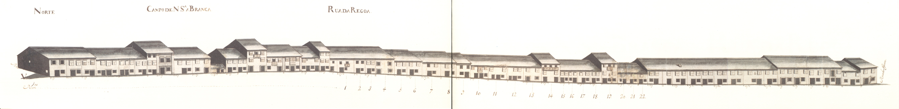

Street Details
Numero de rua: 43
Nome da rua: Campo de Nossa Senhora a Branca. Rua da Régua. Rua Nova da Seara
Campo de Nossa Senhora a Branca. Rua da Régua. Rua Nova da Seara- Norte.

Campo de Nossa Senhora a Branca. Rua da Régua. Rua Nova da Seara- Sul
Devido ao desnível do terreno onde se implantava, estava dividido em duas ruas, separadas por um murete no centro.
Aberta talvez sobre o traçado da via romana que levava a Chaves, esta rua, na Idade Média, fazia a ligação entre a cidade e a igreja de S. Victor.Chamava-se então rua da Corredoura.
D.Luís de Sousa (1677-1690) reedificador da igreja de S.Victor que fica na extremidade Este desta artéria, mandou alargá-la, criando então 2 artérias paralelas e desniveladas: a da Régua no lado Norte e a rua Nova da Seara, no Sul.
Em 1750 tinha um carácter ainda de via de penetração; por ela entrava na cidade todo o tráfego oriundo da zona do Barroso e do Bom Jesus.
Os seus edifícios eram quase todos do tipo com a porta de entrada ladeada de uma janela, com dois pisos e janelas bracarenses no primeiro andar.
Os alçados que aqui se apresentam têm três tipos diferentes: os da parte do campo de Nossa Senhora a Branca são casas simples, de dois pisos, do tipo de porta ladeada por janela no rés-do-chão e janelas bracarenses no andar nobre, e três vãos. Os da rua da Régua, são do mesmo tipo mas têm apenas 2 vãos o que imediatamente lhe dá outro carácter. Os da rua Nova da Seara são muito mais pobres, predominando os de um só piso (75%), muitos deles também do tipo de porta ladeada por janela (79%), e com as aberturas vazadas, que seriam tapadas por portas de madeira; a metade Oeste estava totalmente ocupada por campos.
Esta artéria mantém algumas das raras casas deste tipo que ainda hoje se conservam em Braga.
Das 56 casas do lado Norte (correspondendo ao Campo de Nossa Senhora a Branca e rua da Régua) e 24 do Sul (rua Nova da Seara) eram prazos do Cabido 22 e 24, respectivamente.
As ruas da Régua e Nova da Seara formam actualmente a rua de S. Victor. Esta designação remonta já a 1865.
| Número | Enfiteuta | Foro | Descrição |
|---|---|---|---|
| 1 | Sebastião Luís de Faria, enfiteuta principal do prazo dos campos detrás de Nossa Senhora a Branca e das Ranhas, sito na freguesia de S.Vitor | Os herdeiros de Cosme Francisco, besteiro, casado com Isabel Pereira, pagam 540 reis e 1 galinha ao enfiteuta do prazo dos campos detrás de N. Sra. a Branca e das Ranhas, situado na freguesia de S. Vitor. Confronta, do poente, com casa foreira ao Hospital de S.Marcos. | |
| 2 e 3 | Sebastião Luís de Faria, enfiteuta principal do prazo dos campos detrás de Nossa Senhora a Branca e das Ranhas, sito na freguesia de S.Vitor | Os herdeiros de Francisco Gomes, alfaiate, casado com Margarida Francisca, pagam 660 reis e 1 galinha ao enfiteuta do prazo dos campos detrás de N. Sra. a Branca e das Ranhas. | |
| 4 | Sebastião Luís de Faria, enfiteuta principal do prazo dos campos detrás de Nossa Senhora a Branca e das Ranhas, sito na freguesia de S.Vitor | Os herdeiros de Maria de Oliveira, viúva, pagam 710 reis e 1 galinha ao enfiteuta do prazo dos campos detrás de N. Sra. a Branca e das Ranhas. | |
| 5 e 6 | Sebastião Luís de Faria, enfiteuta principal do prazo dos campos detrás de Nossa Senhora a Branca e das Ranhas, sito na freguesia de S.Vitor | Os herdeiros de Tomé de Araújo, carpinteiro, casado com Maria Antónia, pagam 1050 reis e 1 galinha ao enfiteuta do prazo dos campos detrás de N. Sra. a Branca e das Ranhas. | |
| 7, 8 e 9 | Sebastião Luís de Faria, enfiteuta principal do prazo dos campos detrás de Nossa Senhora a Branca e das Ranhas, sito na freguesia de S.Vitor | Os herdeiros de Domingos Fernandes, tanoeiro, casado com Isabel Gonçalves, pagam 1400 reis e 2 galinhas ao enfiteuta do prazo dos campos detrás de N. Sra. a Branca e das Ranhas. | |
| 11 | Sebastião Luís de Faria, enfiteuta principal do prazo dos campos detrás de Nossa Senhora a Branca e das Ranhas, sito na freguesia de S.Vitor | Os herdeiros de Maria de Sousa, casada com Tomé da Silva, da freguesia de Barroso, pagam 750 reis e 1 galinha ao enfiteuta do prazo dos campos detrás de N. Sra. a Branca e das Ranhas. Esteve unida ao n.º10 entre os anos de 1612 a 1671. | |
| 12 | Sebastião Luís de Faria, enfiteuta principal do prazo dos campos detrás de Nossa Senhora a Branca e das Ranhas, sito na freguesia de S.Vitor | Os herdeiros de Inácia do Vale, filha natural de Isabel Dias, pagam 720 reis e 1 galinha ao enfiteuta do prazo dos campos detrás de N. Sra. a Branca e das Ranhas. Esteve unida ao n.º10 entre os anos de 1612 a 1679. | |
| 13 | Sebastião Luís de Faria, enfiteuta principal do prazo dos campos detrás de Nossa Senhora a Branca e das Ranhas, sito na freguesia de S.Vitor | Os herdeiros de Domingos Fernandes, ferreiro, casado com Isabel Antónia, pagam foro ao enfiteuta do prazo dos campos detrás de N. Sra. a Branca e das Ranhas. | |
| 14 | Sebastião Luís de Faria, enfiteuta principal do prazo dos campos detrás de Nossa Senhora a Branca e das Ranhas, sito na freguesia de S.Vitor | Os herdeiros de António Carvalho, sombreiro, casado com Maria Martins, pagam 700 reis e 1 galinha ao enfiteuta do prazo dos campos detrás de N. Sra. a Branca e das Ranhas. | |
| 15 | Sebastião Luís de Faria, enfiteuta principal do prazo dos campos detrás de Nossa Senhora a Branca e das Ranhas, sito na freguesia de S.Vitor | Os herdeiros de Francisco Martins, sombreiro, casado com Gregória Ferreira, pagam 770 reis ao enfiteuta do prazo dos campos detrás de N. Sra. a Branca e das Ranhas. | |
| 16 | Sebastião Luís de Faria, enfiteuta principal do prazo dos campos detrás de Nossa Senhora a Branca e das Ranhas, sito na freguesia de S.Vitor | Os herdeiros do Padre António de Oliveira, pagam 755 reis ao enfiteuta do prazo dos campos detrás de N. Sra. a Branca e das Ranhas. | |
| 17 | Sebastião Luís de Faria, enfiteuta principal do prazo dos campos detrás de Nossa Senhora a Branca e das Ranhas, sito na freguesia de S.Vitor | Os herdeiros de Maria Gonçalves, viúva de Francisco Gonçalves, pagam 700 reis e 1 galinha ao enfiteuta do prazo dos campos detrás de N. Sra. a Branca e das Ranhas. Foi subenfiteut, juntamente com os n.º18, 19, 20, 21 e 22, no ano de 1612. | |
| 18 a 22 | Sebastião Luís de Faria, enfiteuta principal do prazo dos campos detrás de Nossa Senhora a Branca e das Ranhas, sito na freguesia de S.Vitor | Os subenfiteutas pagam ao enfiteuta do prazo dos campos detrás de N. Sra. a Branca e das Ranhas, pelo n.º18, 100 reis; pelo n.º19, 600 reis e 1 galinha; pelos n.º20 e 21 (unidos), 700 reis e 1 galinha; e pelo n.º22, 700 reis e 1 galinha. A casa n.º22 confronta, do nascente, com casa foeira à Mitra. | |
| 1 e 2 | As filhas do Dr. António Carneiro Tinoco | Pagam 1800 reis ao n.º24. | |
| 3 | As filhas do Dr. António Carneiro Tinoco | Manuel Teixeira, sombreireiro, casado com Teresa Maria, paga 1200 reis ao n.º24. | |
| 4 | As filhas do Dr. António Carneiro Tinoco | Senhorinha Lopes, solteira, e seu filho João Marcos, da freguesia de S. Mamede d'Este, pagam 1200 reis ao n.º24. | |
| 5 | As filhas do Dr. António Carneiro Tinoco | Bento de Macedo, sombreireiro, casado com Quitéria Francisca, paga 1200 reis ao n.º24. | |
| 6 | As filhas do Dr. António Carneiro Tinoco | João Franscisco de Oliveira, alfaiate, casado com Mariana Antónia, paga 1200 reis ao n.º24. | |
| 7 | As filhas do Dr. António Carneiro Tinoco | Carlos Pereira, sombreireiro, casado com Mariana Francisca, paga 1200 reis ao n.º24. | |
| 8 | As filhas do Dr. António Carneiro Tinoco | António de Araújo, serralheiro, casado com Josefa Teresa, paga 1200 reis ao n.º24. | |
| 9 | As filhas do Dr. António Carneiro Tinoco | Manuel Marques, sombreireiro, casado com Antónia Francisca, paga 1200 reis ao n.º24. | |
| 10 e 11 | As filhas do Dr. António Carneiro Tinoco | José de Oliveira, carpinteiro, casado com Maria Francisca, paga 1800 reis ao n.º24. | |
| 12 | As filhas do Dr. António Carneiro Tinoco | Manuel Dias, serralheiro, casado com Maria Francisca, paga 1200 reis ao n.º24. | |
| 13 | As filhas do Dr. António Carneiro Tinoco | António de Araújo, sombreireiro, casado com Isabel Maria, paga 1200 reis ao n.º24. | |
| 14 | As filhas do Dr. António Carneiro Tinoco | Francisco Silva, carpinteiro, casado com Isabel Gomes, paga 1200 reis ao n.º24. | |
| 15 | As filhas do Dr. António Carneiro Tinoco | Custódio Francisco, pedreiro, casado com Ana Francisca, paga 1200 reis ao n.º24. | |
| 16 | As filhas do Dr. António Carneiro Tinoco | Silvestre de Oliveira, jornaleiro, casado com Inês Dantas, paga 1200 reis ao n.º24. | |
| 17 | As filhas do Dr. António Carneiro Tinoco | Ana Ferreira, viúva de Domingos Marques, alfaiate, paga 1200 reis ao n.º24. | |
| 18 | As filhas do Dr. António Carneiro Tinoco | Manuel da Costa, sombreireiro, casado com Marta Ferreira, paga 1200 reis ao n.º24. | |
| 19 | As filhas do Dr. António Carneiro Tinoco | Diogo da Costa, sombreireiro, casado com Ana Lopes, paga 1200 reis ao n.º24. | |
| 20 | As filhas do Dr. António Carneiro Tinoco | Custódio Pereira, pedreiro, casado com Ursula Francisca, paga 1200 reis ao n.º24. | |
| 21 | As filhas do Dr. António Carneiro Tinoco | Geraldo de Matos, sombreireiro, casado com Domingas Francisca, paga 1200 reis ao n.º24. | |
| 22 | As filhas do Dr. António Carneiro Tinoco | Garcia Correia, carpinteiro, casado com Francisca de Barros, paga 1200 reis ao n.º24. | |
| 23 | As filhas do Dr. António Carneiro Tinoco | Domingos de Barros, alfaiate, viúvo, paga 1200 reis ao n.º24. Confronta, do poente, com propriedade do prazo principal. | |
| 24 | As filhas do Dr. António Carneiro Tinoco | 100 reis, 6 alqueires de trigo, 6 de pão meado e 2 galinhas | E cabeça de Prazo «Casal de Entre os Matos», da freguesia de S. Vitor. O emprazamento mais antigo que se conehce data de 1483 e foi feito a favor de Martim Álvares, ouvires, da cidade de Braga. Seguem-se os emprazamentos dos anos de 1550 e 1579. Pertence a este prazo os n.º1 a 23 da rua Nova da Seara. |